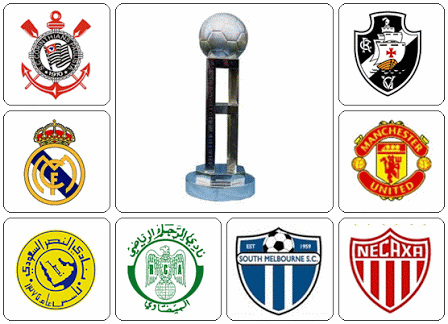

Home
Mundial 2000
Mundial 2012
Sobre
CAMPEONATOS INTERNACIONAIS
Mundial de Clubes 2000

(Times Mundial de Clubes 2000)
Páis sede: Brasil
Estádios: Maracanã(RJ) e Morumbi(SP)
Campeão: Sport Club Corinthians Paulista
Artilheiros: Anelka (Real Madrid) e Romário (Vasco), com 3 gols cada